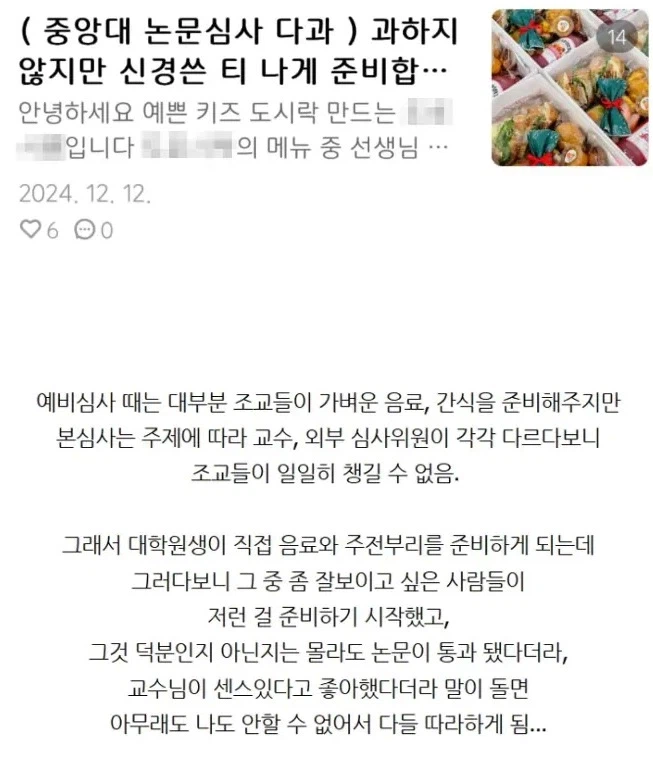
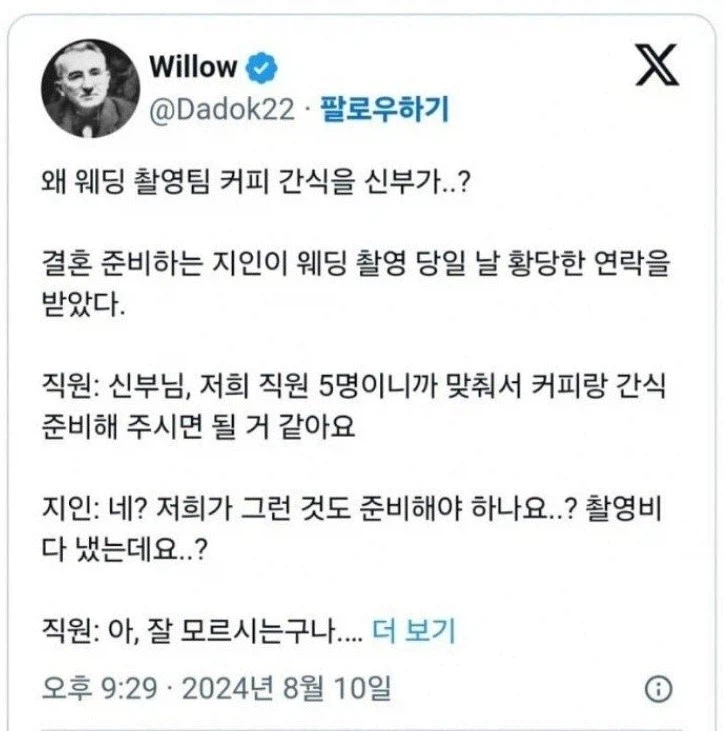
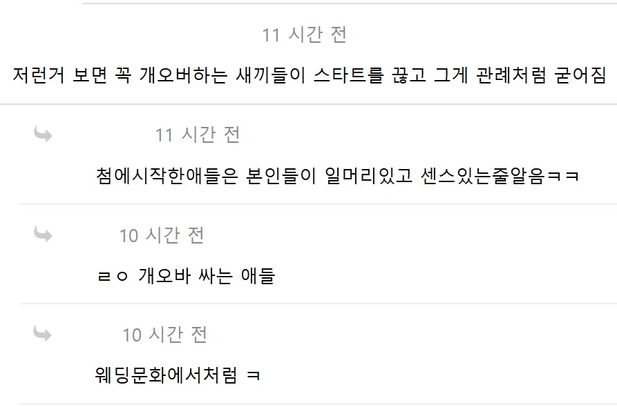

https://bbs.ruliweb.com/best/board/300143/read/76570498



첫번째는 모르겠고 두번째 웨딩문화는
웨딩업체 직원들이 SNS에서 작업쳐서 만든 결과물
https://bbs.ruliweb.com/best/board/300143/read/76570498



첫번째는 모르겠고 두번째 웨딩문화는
웨딩업체 직원들이 SNS에서 작업쳐서 만든 결과물
이런글 올라오면 매번 혐오하는데
스튜디오 씨발년들 애미애비 영정사진 찍을때도 추가금 받고 추가금 없이는 원본 70만원에 꼭사길
추가금 안하면 되지 그걸 왜 혐오해 하면
실제로 그낭 좋게 안한다고 말 했는데도
웨딩사진은 우리께아니라 부모님꺼다라면서 계속 시간낭비시키고 감정싸움검
기분 개잡치게하는 족속들임
사실 관례 타령하는 고아들의 말 거르고 무시하면 되는데
개개인이 그냥 그럽시다 하다보면 관례 관습이 유지되는 거지 뭐..
항상 오바싸는 새끼들이 문제임
수영장 강사선물도 그렇고 여초쪽이 저런문화 잘생기나봄